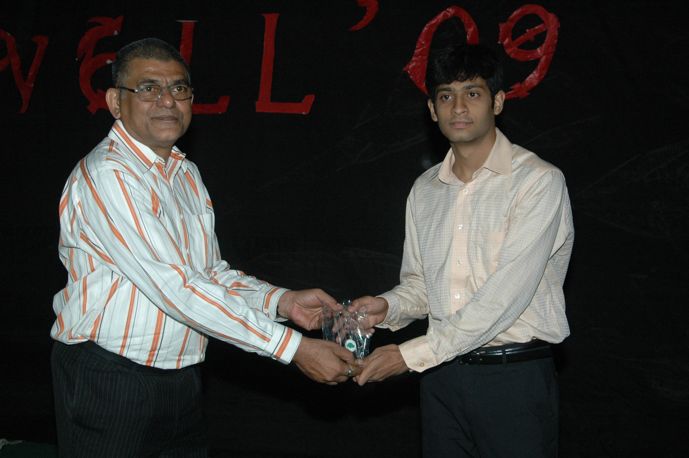

The Yearbook - Commemorating 2005-09!
Arun M.S.C's profile information
Name - Arun M.S.CBirthday - 28-09-1988
Email - sarat.muppana@gmail.com
Address - Sri Somaraju Talkies, Cinema Road , Tuni , East Godavari, A.P.
Phone - 9000213273
Webpage - Link
Hobbies - Music ,Swimming, Running, Badminton , Tennis
WishList - having the World's biggggest cinema sound system
What would you want to be remembered as - Sounds, Distance Runner
Testimonials written by Arun M.S.C
Arun M.S.C's Album

Default caption

Default caption

{kind=link}
Default caption
Testimonials
Chakrapani wrote-Arun..when i go for practice after an year i saw this guy in the ground running 25-35 rounds in a day
 I was just surprised...and started working more..thanks dude..because of u my timmings got much better
I was just surprised...and started working more..thanks dude..because of u my timmings got much better 
a very nice and a friendly guy..
looking forward for ur competition man!!
All the best for ur future!!!
sana wrote-
arun,..appudappudu m.s.c. ani pilustham....
peddapuram dheggare veedi illu...so manodu maanchi hmmmmmmmmmmm
a gud athlete, shuttle rachcha leputhadu...body baa maintain chesthadu....
maintains good relationship with every one...
professor, LPU lo rachcha lepali....
all de best for ur future dude.........touch lo vuntundu...
Raveendra M wrote-
[
 ]
]M.Bhanu Chandra wrote-
Arun @ digital dolby aka umpj aka arunicecreams.
Veedu oka sound freak. Maatina , paatina full sound kaavali veediki.
A great runner , i think know one in our college has that much stamina... keep going ra.
All the best ra
Varun wrote-
u r a very strange person ra i ever came across in my life... one of ur dialogues "umpj" is my favourite... had a gud time with u .... i always wondered how u got gud cg inspite of playing games ... u r a inspiration for me to reduce weight ( i reduced 8 kgs ) ...
... i'm very sorry that i had to take the speakers back that time bcoz i had sm problems....
have a bright future ...
shashank lagishetty wrote-
Arun, college starting days lone kalisa...appatinunchi eppati varaku anthe lively, anthe kasi maintain chestunnadu. nee kasi(or whatever word you use)chooste naku chaala muchata vestundi. Ninnu chaala vishayalalo inspiration ga teesukovachu ra babuu...10k run ki nuvvu vunnavane participate chesa.
DC assignment eppudaina pampinchu ra. nenu choosukunta. All the best mama.
Raja sekhar reddy A wrote-
rendezvous sry
Raja sekhar reddy A wrote-
veedu anukooni sangatanalalo raccha ela chesthado meeku , janga gaadiki baaga telusu .
veediki , nenu , ravi chettha advice lu isthu untam , avi ala follow avuthuntadu silly fellow , jab we met choosi oka advice icham adhi 2much advice .

Meeru entha 2much ga veedimeedha jokelu veesina , tirigi veyyadu , navvuthune untadu ,konni saarlu feel square avuthadu [vaadi prakaram] appude vaadu hurt ayinattu annamaata .
Andaru (ma batch) high lo undaga naatho oka sari veella friend (vanila icecream ) ki fone cheyicharu , oka worst/best (donno) memorable incident .
Scene I (arun , me , naren , ravi , abhi)
Arun - Ammayilu ni asalu choodanehe inka ippatinundi
Rest - #$%@^

Arun - [ventane pakkane velthunna ammayini dooranga velle varaku choosi ] Idhe chivari saari ra inka choodanu .
Rest - You're the man
Scene II ( arun going to meet his school crush ,me going with him to drop him at the rendevous)
Arun - [ hood shirt , goggles , purse with hell lot of money ]
[finally we were there ]
Arun - Hi [to 'the' girl ]
Girl - Intha andanga unnaventra nuvvu
Arun - Inka ikkade unnaventra ,den*ey ehe[na chevilo]
Girl - Hi raj
Arun - vaadiki hi cheppoddu
 [padinimishalalo possesive ayipoyadu ], manam veldam pada ani tisukupoyadu
[padinimishalalo possesive ayipoyadu ], manam veldam pada ani tisukupoyadu
Arun - hostel ki shirt ninda lips marks tho vachadu anukondi adhi vere vishayam
[end]
manchi friend , helping nature ekkuva , kopam vasthe gtalk lo status mesg lu pedathadu anthe
running vaati gurinchi andaru rasaru kinda chadavandi .
manam kalisi movie gurantee ga tidam ra .
bye
Samish Chandra Kolli wrote-
edhaina sincere ga cheyali ani pedhalu cheptharu dhaniki reason veedini chudandi ardham avuthundhi. Great marathon-runner, swimming freak, sound engineer and a cool friend
great change ra, body bhalle shape ki thechav, enthaina nuvvu keka ehe
.
All the best ra mama LPU lo mana thelugodi power chupinchu
UmaMahesh.Allenki wrote-
jogging chesthe sannaga avutharu ani cheppadaniki veede nidarshanam
 . he is my swimming frnd. chala baga swimming chesthadu . badminton chala baga aduthadu.veedi chala biggerga navuuthadu. All the best for ur future ra
. he is my swimming frnd. chala baga swimming chesthadu . badminton chala baga aduthadu.veedi chala biggerga navuuthadu. All the best for ur future ra Siva Reddy wrote-
lol ra abhilash. Defnitely aa questions adugutaadu veedu.
arun gaadu nenu chala vaatilo partners. running, gym, mess etc. vammo veedi stamina gurunchi naaku telisanantha meeku telavakapovvacchu.
avi maa training days. Goal is to get a 6 pack. so we started our training. vaadu evo evo chetta chadivithe vaadu chesinatlu, cheppinatlu nenu follow ayyevaadni. first lo iddari stamina equal gaane vundedi. iddaram running ani cheppi oka 30 min paregettavaallam. around 20-30 rounds. ee inspiration thone nenu 10k kuda vellipoya. vaadu nannu vadilesi 21k ki velladu edava. ila maa training days gadustunnay. gradual ga vaadi stamina exponential ga peragadam start ayyindi. naa dula tiradam kuda modalieindi. ala ala veedu number of rounds penchesaadu. nenu alage tagginchesi inka naa valla kaaka lite teesukunna. results are he almost got a 6-pack and me got slim with small single pack
Kudos to you ra
ninnu chusi chaala inspire ayya ra. kacchintanga nenu naa life long running chesta. nuvvu cheppinavanni gurtunnay. veediki naachani prathidi fat content vunnatte. alane naaku cheppi nannu chaala tinakundaa chesaadu. edava

physically ne kaadu, mental ga kudaa vedu chaala strong. ece vallaki veede tutor. exams ki one week nunchi prepare avutaadu. edi chesina serious ga try chestaadu. baagundi ra arun ga.
first year lo naa room pakkane. icecreams ani peru marchukunnadu. phone lo tega maatladevaadu okkappudu. kaani chala change vacchindi tarvatha. ippudu ammay kanapadithe chaalu comment chesestaadu. vaadi favourite word item. arey item ga. item ani vaadakapothe brathakalevaa
LPU lo rock chey. akkada vunna students ki subject ki badulu 6-packs gurunchi cheppaku. ammaylatho jagratta icecream ga. miss you
bye

Saaandeepa Phani Srinivas Y wrote-
pichha koool machha veedu..!! ne-time smile untundi face lo ( ammaila topic raise chesthe thappa
valla vishayam lo  )
)
stamina ekkuva.... alaage dedication kuda ekkuve anni aspects lo
gr8 ra..!! keep going maama
Samuel John wrote-
telugu baasha lo veediki nachey okey okka padham "cunt"
Bhanukiran Vinzamuri wrote-
Abbo Arun veedi prati danki gtalk id marche vaadu first year lo
. Is a great runner and a nice guy. We both used to have the same evening problem at the gym hehe kaani manamu matlade language alaku erkaledu kada .All the best for your future raa.
PS Arey abhilash gaadki purti gaa mati dobbindi
Abhilash Inumella wrote-
Arun MSC during his engagement:
MSC:Which sports do you play ?
bride:

MSC: Do you have 6-pack ?
bride:
MSC: Come let us go for a marathon ?
bride:
Aniket Sharma wrote-
Your enthusiasm for running is exemplary.
In the future, if we ever run a Marathon together, I think there can be no better guy than you as a partner in practice.
Hope you win the Hyderabad Full Marathon some day. Never say die!
Srirang Ranjalkar wrote-
Nee stamina ki hats off mama.
. Football ground lo 60+ rounds . Swimming pool lo 80 rounds .... baboi asalu nuvvu manishena?? Nee kasi ki inko .
DC lo CP650 ante chaalu. 2nd year lo toooo much collection pettavu. Eppudu bor kottinappudu nee file list open cheyyatam.. download cheyyatam .. chudatam. Ade na pani.
All the best for your future ra ...
Srirang.
Himank Sharma wrote-
Stickbum, Jumpche, Umpche
 these are the first words which come to my mind when I think of this person, who was my neighbour in NBH for the first two years. We used to have our share of BC, in cellar, with one person calling the other the aforementioned 3 words. I for one don't have any idea what these words mean, as they were invented(?) by him. I think he once told me about them but I don't seem to remember too much of them now. :|
these are the first words which come to my mind when I think of this person, who was my neighbour in NBH for the first two years. We used to have our share of BC, in cellar, with one person calling the other the aforementioned 3 words. I for one don't have any idea what these words mean, as they were invented(?) by him. I think he once told me about them but I don't seem to remember too much of them now. :|
A funny guy to hang around with, the little interaction during the first two years will always remain memorable. I am used to being called weird and what not but this is one guy who will come tops, whenever you are talking about weirdness
. Even while walking normally he always has that air of weirdness. Both of us being weird being the reason why the both of us boded quite well in the beginning.
He also seems to be having quite an affinity for Ice-Creams, all his email ids have some or the other mention of Ice cream in them.
Dont think have spoken even one line to him over the last two years, its just a nice "hi" whenever one of us see the other.
Hoping for him to have a bright future.
Character he resembles:- Mr. Bean (can you even think of anybody more apt)
An Advise - Try and be the same, world needs some people like you who can be icy cool and aloof from the troubles.
- From a weirdo to the bigger one...
Cheers!!! Keep rocking man...
MNV Kartheek wrote-
cp650, sticky, icecream boy, sound engineer .. aka arun ... He is an energetic badminton player..has a lot of determination ... invisible "kasi" .. and finally he has become a "lovely professor" .. don't know if he starts any "sunderakanda" over there...
all the best ...
Sandeep Y V wrote-
pichi keka determination veedidi... asala mana ground lo 20-25 rounds parigetti.. .aa tarvata swimming ki velle vadini veedokkadine choosa...
asala tagina tarvata oka roju janga gadini.. security guard ni tittina scene...abhooo.. keka..
...
all the best raa....
Satish Chandra Prasad wrote-
nice friend .... mama nijamga nuvvu pakkana vunte time pass bale avudi , imka mama velle lopu andaram taagesi undaga , nee sound engineering njoi cheyali mama , vinadame kaani ippatiki varaku expericence cheyale
, taagesi madyalo aa janga gaadini kuchopedam , asalu marathon running ante ento chupinchu mama vaadiki , imka ante he'z a calm(anukunte tappu),decent(parle konnisarlu),ammayilanu asalu kelakadu (baboi boothu) , k mam's all da best in LPU , jagrata roy aa vatala gaadini chusuko lekapote aa kullu comedy to dobbutaadu Charan Thota wrote-
veedi dedication gurinchi vere chepakarla veedu ground lo vese rounds chooste chaalu ....
maama malli okka sarri janga gaadini velle lopu nuvvu fuck chestunte choodalani vundi raa
all da best raa LPU lo prudhvi gaadini konchem control cheyyi
G. Rohit Bharadwaj wrote-
the runner..
you inspire me a lot when it comes to sports, your dedication towards the running and i got to know your character from the post in your blog, it was the best i have ever read from a sports person
Heard your sounds few times and i must say, they are real wierd.. hope you will stop them once your wishlist comes true..
all the very best for ur future,
stay in touch,
cheers
rohit
Nagarjuna Pavan Kumar G wrote-
arun-the icecream boy...
veedi gurinchi inta mandi inni raasaaru gaanii, veedi evolution mottam(IIIT lo) choosindi maatram nenu...first year lo baagaa close gaa move ayinaa taravaata konchem maa daarulu maarinaa, we were never far...veedi progress antaa choostuunE unnaa...veedilo unna kasi kasilaa anipinchani kasi..veedu lite teeskunte piccha piccha lite...
mottaaniki professor ayi koorchunnaadu...kinda mana janamantaa cheppina range lo veedini choodaalani naa korika..i missed that one...
veedi arupulu,kekalu amogham...i wanna see where he ends up in his career...all the best dude...
nag
P Srinivasa Reddy wrote-
sound engineer
open minded (especially on ladies)
ekkuva thaagadu kani thagithe aaagadu (janga gadinaithe sava d*******
)
Raja sekhar reddy A wrote-
veedi chethiki fork mathram eppudu ivvakandi [inside joke]. especially meeru ammayi ayithe assalu ivvodu
Raja sekhar reddy A wrote-
Amayakudanukunte porapatu.
Praveen Bysani wrote-
gym boy,marathon runner .. body kosam , beer kuda maanesadu. Heavy rock genre ki picha fan. ammayilante oka vidhamaina ellergy vachesindi enduko mari .2 pegs vesadante racha racha chestadu.
all the best mama
satya janga wrote-
Hours passes like seconds in his presence..
The smartest kid of our batch..
He says "Ammayilu antha Item gaallu ra baabu"..
Rey maama nannu okasari PEDDAPURAM teesuku vellaraa plzz ...
Samuel John wrote-
arey mama happy to open ur account raa
nee mouth sound system too much raa , nuvvu roddu meedha poyye prathi items ni ITEM ani pilusthunteyy actually arusthunteyy , it sounds awesome
mana sittings eppudu coincide avvaledhu , ee saari kalisi ractha cheddaaam .... assalu janga gaadini parigettinchinappudu
u can easily get nething u desire , so keep rocking ..
urs
sam john